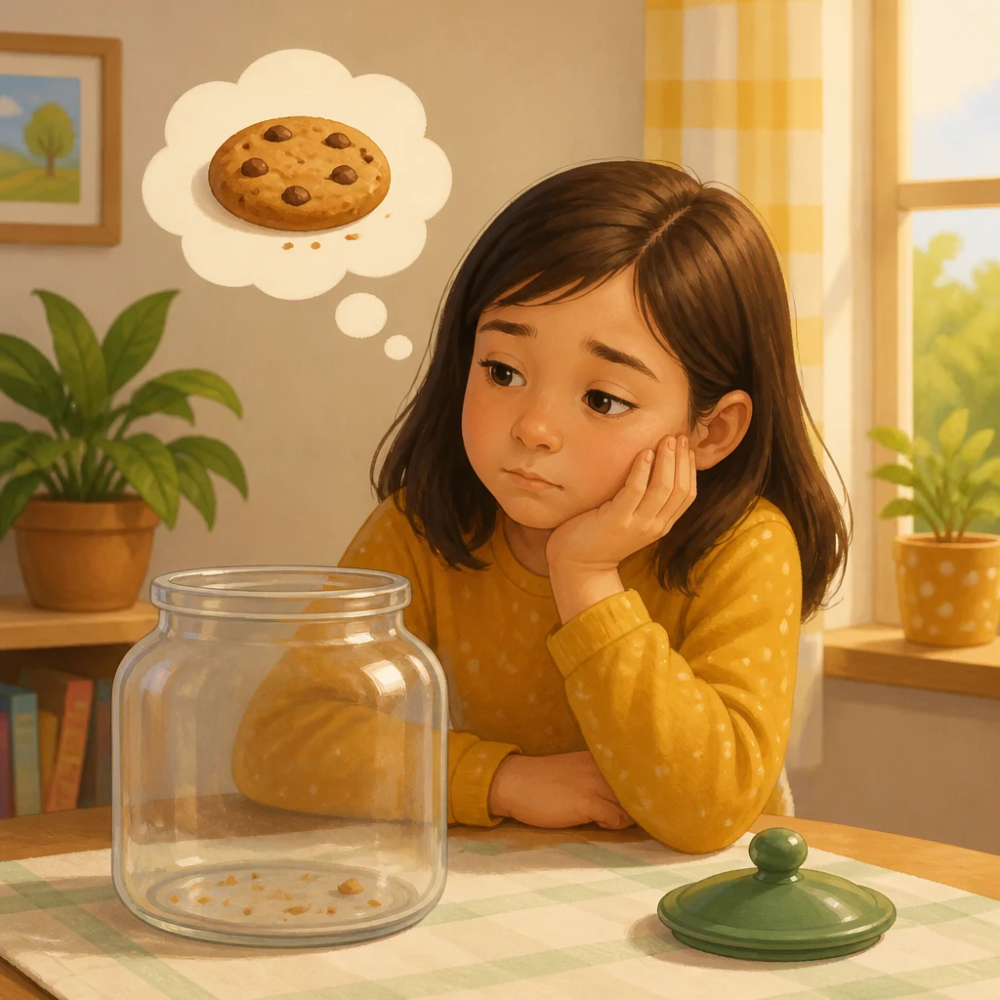
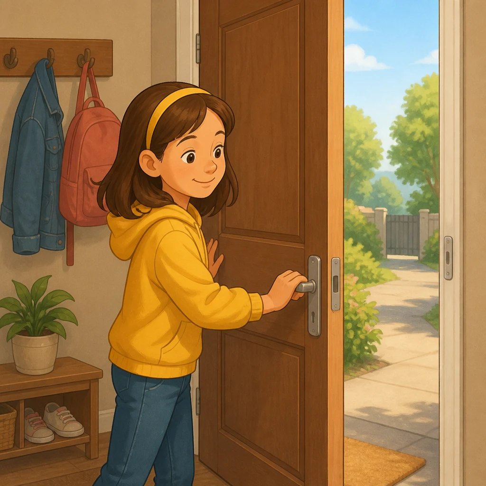
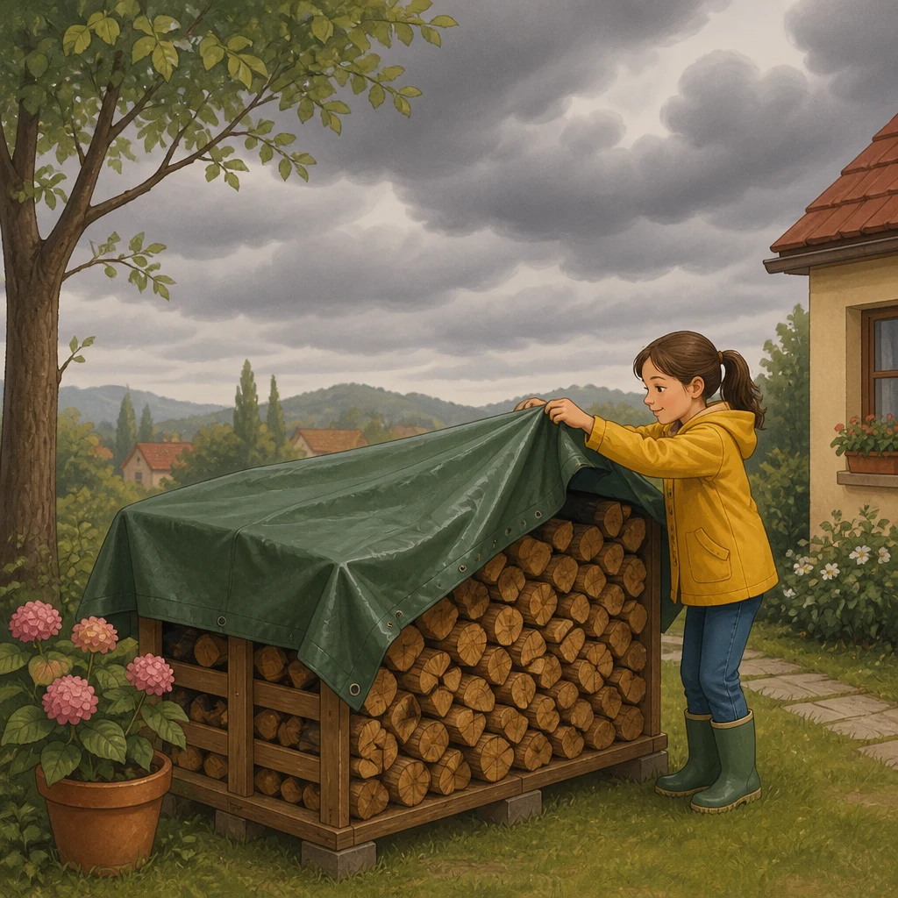
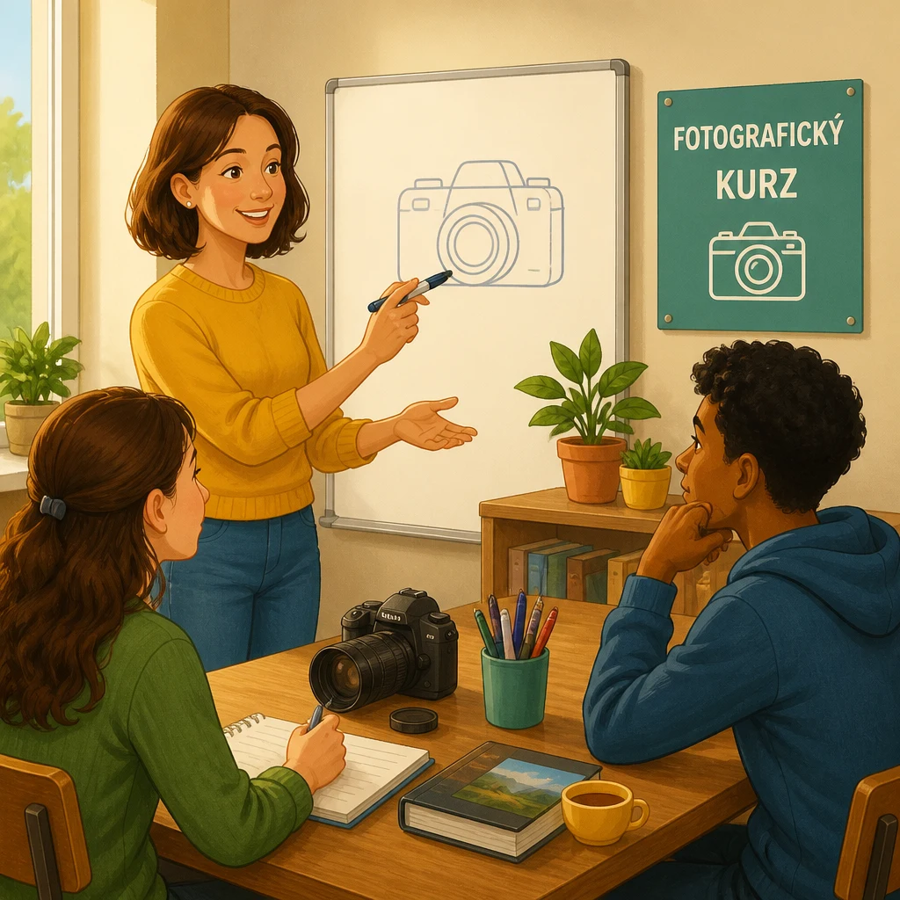

| Preview | File | Size | Words | Czech meanings | Status |
|---|---|---|---|---|---|
true.webp |
147.5 kB | vero | pravý, pravdivý, opravdový; è vero to je pravda | generated | |
flight.webp |
121.9 kB | volo | let | generated | |
 |
need.webp |
100.8 kB | bisogno | potřeba | generated |
 |
close.webp |
118.9 kB | chiudere | zavřít | generated |
sky.webp |
137.8 kB | cielo | obloha, nebe | generated | |
color.webp |
193.5 kB | colore | barva | generated | |
 |
cloudy.webp |
196.2 kB | coperto | zatažený, pokrytý | generated |
 |
course.webp |
168.4 kB | corso | kurz | generated |
fun.webp |
234.2 kB | divertimento | zábava | generated | |
dictionary.webp |
152.3 kB | dizionario | slovník | generated |